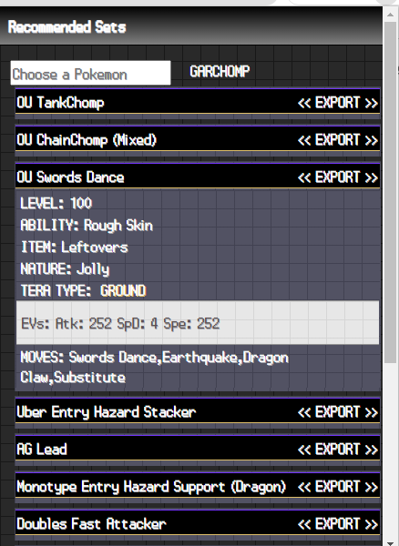
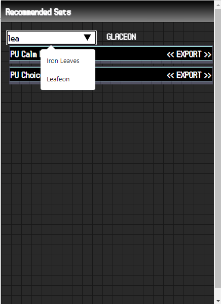
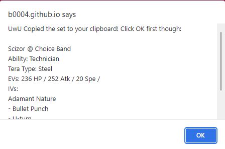

Projects
-
Pokemon Sets
A Pokémon set builder is a tool or feature within a Pokémon-related website or application that allows trainers to create and customize their own Pokémon sets or teams for competitive battles. It provides a convenient way to plan and strategize the moves, abilities, items, and EV (Effort Value) spreads for each Pokémon on the team.
   -
YouTube Music Playlist Rater
The provided code enables users to rate songs in a YouTube Music playlist by dynamically creating dropdown menus next to each track, allowing users to select a rating from "S" to "F". The selected rating is stored locally, ensuring it persists across page refreshes, and the dropdown menus update their styles to reflect the chosen rating. This feature enhances the playlist experience by allowing users to organize and remember their preferences for each song.